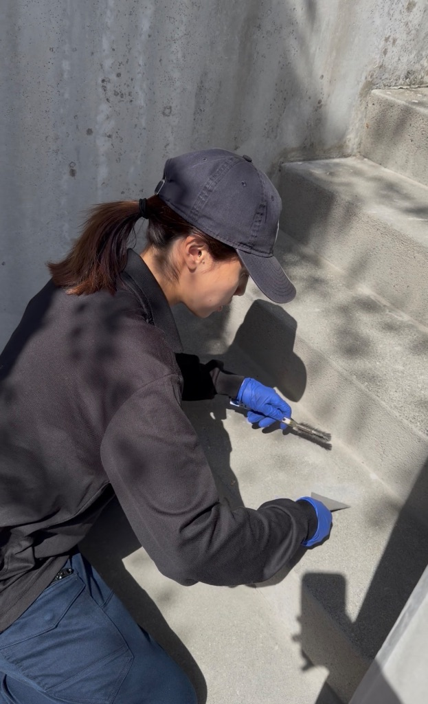
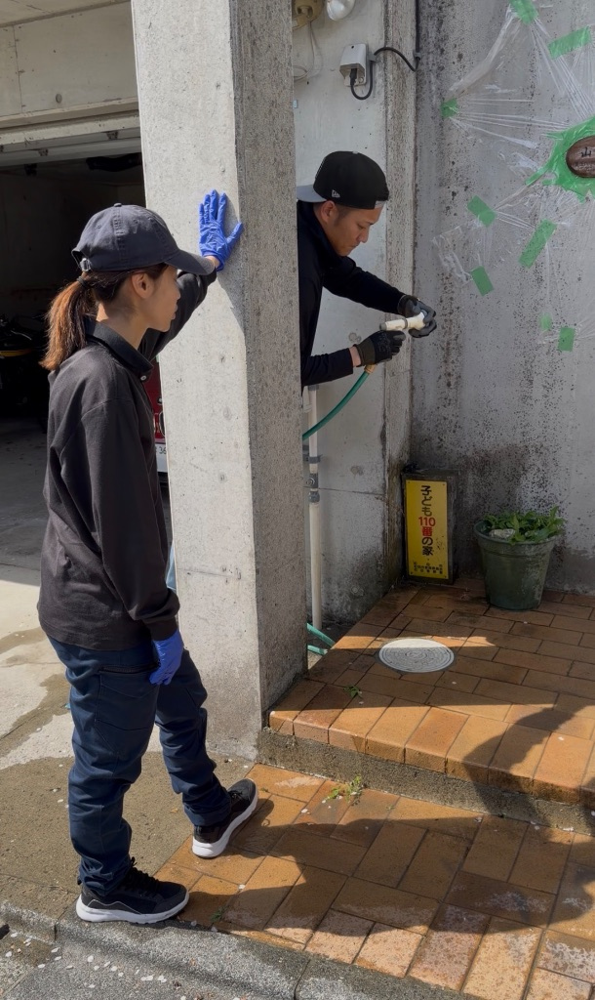

お掃除のお手伝い🧹砂利敷いたらめっちゃ素敵✨
サービスで砂利を敷いてみたら、喜んでくれて嬉しい😊
今日は現場でお掃除のお手伝い🧹
会社が忙しくて、
職人さんたちは工事で手一杯。
私にできることって何だろう？って考えて、
お掃除のお手伝いすることにした😊

※ 細かいところまで丁寧にお掃除中✨
💪 私にできること
社長って言っても、
専門的な工事は職人さんにお任せ。
でも、
お客様に喜んでもらうために
私にできることはたくさんある✨
お掃除とか、
細かい気配りとか、
そういうのは私の得意分野😊
だから、
現場に行ったら積極的にお手伝いしてる！
🪨 砂利を敷いてみた
お掃除してる時に、
ふと植木の周りを見たら、
土がむき出しになってた。
「砂利を敷いたら、
もっと素敵になるんじゃない？」って思って、
サービスで敷いてみることにした🪨

※ 砂利を敷いたら、めっちゃ綺麗になった✨
Before：土がむき出し
After：白い砂利でスッキリ✨
これだけで、
すごく印象が変わるんだよね😊
💧 植木にお水やり
他にも、
植木にお水をあげたよ💧

※ 植木たちにたっぷりお水をあげてる様子🌿💧
植木って、
お水をあげると
すごく喜んでるみたいに見えるんだよね🌿
お客様のお庭を綺麗に保つために、
こういう細かいお手伝いも大事✨
植物もお手入れすれば、
どんどん元気になっていくから、
お世話するの楽しい😊
😊 お客様が喜んでくれた
作業が終わって、
お客様に見ていただいたら…
「わぁ、素敵！ありがとうございます！」
って、めっちゃ喜んでくれた😭
この瞬間が、
一番嬉しい✨
サービスで敷いた砂利だけど、
お客様の笑顔が見られて、
やって良かったなぁって思った😊
💕 サービス精神
私達の会社は、
「お客様に喜んでもらいたい」って
気持ちを大切にしてる💕
だから、
契約内容以外のことでも、
「これやったら喜んでもらえるかな？」って思ったら、
積極的にやってる✨
砂利を敷くとか、
細かいお掃除とか、
小さなことだけど、
そういう積み重ねが大事なんだよね😊
お客様の笑顔が見られたら、
もうそれだけで幸せ🥹
✨ 小さな気配り
大きなことじゃなくても、
小さな気配りが、
お客様の満足度を上げるって信じてる✨
私達が心がけてる小さな気配り：
- ✓ 作業前後の丁寧なお掃除
- ✓ 植木や花壇への配慮
- ✓ 近隣への挨拶と声掛け
- ✓ 工事の進捗報告
- ✓ サービスでのちょっとしたプラスα
こういう小さなことが、
お客様の信頼に繋がるんだと思う💪
🌈 これからも
これからも、
お客様に喜んでもらえるように、
小さな気配りを大切にしていきたい✨
工事の品質はもちろん、
プラスαのサービス精神で、
お客様の期待を超えていく💕
今日の砂利敷きみたいに、
「あ、これやったら喜んでもらえるかも」って思ったら、
どんどんやっていこう😊
お客様の笑顔のために、
これからも頑張ります🙏
💭 今日の気持ち
- ✓ 私にできるお掃除のお手伝い🧹
- ✓ 砂利を敷いたら素敵になった🪨✨
- ✓ お客様が喜んでくれて嬉しい😊
- ✓ サービス精神を大切に💕
- ✓ 小さな気配りが信頼に繋がる✨
- ✓ お客様の笑顔が私の幸せ🥹